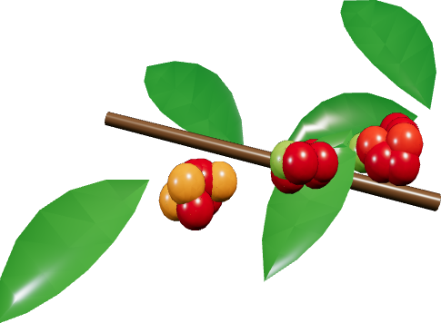

Café Geisha
Módulo K-1460
78%
Cosechar en 2 días
LMMJVSD

Cada letrero de Float Gardens en un techo del barrio es una terraza de la red. La torre central les manda solución nutritiva y compra la cosecha al precio de la cooperativa.
| Terraza | Barrio | Variedad | Matas | Humedad | Maduración | Estado |
|---|